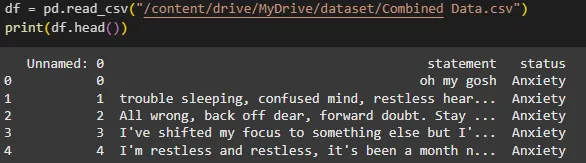
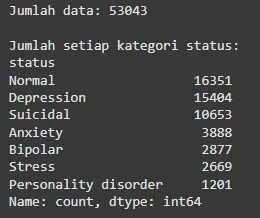
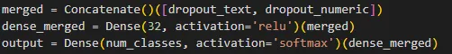
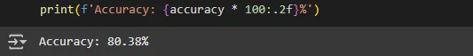

The project was inspired by my observation of how people express themselves through words on social media. Can mental conditions be analyzed based on what they write? This question led me to explore sentiment analysis for mental health using a deep learning approach.
Mental health diagnosis should ideally be done by professionals. However, this model can help professionals as a preliminary tool to detect early signs of emotional patterns from text, especially when direct interactions aren't available.
The dataset used is titled "Sentiment Analysis for Mental Health" from Kaggle, with 53,043 data points and 7 distinct emotion labels. The dataset is imbalanced and requires preprocessing such as tokenization, stopword removal, and label encoding.
 The data undergoes tokenization and is padded to fit LSTM requirements. To address imbalance, class weights are used to give minority classes higher influence during training.
The model is built using LSTM layers for textual input, and merged with a dense layer for numeric input. It uses categorical crossentropy for multi-class classification and softmax as the activation function in the final layer.
Model Merging Code
The model achieved an accuracy of 80.38% which shows potential in classifying emotions based on text.
This model can serve as a complementary tool for mental health professionals to analyze written expressions of users. Further development can include more advanced architectures or external data to improve accuracy and generalization.